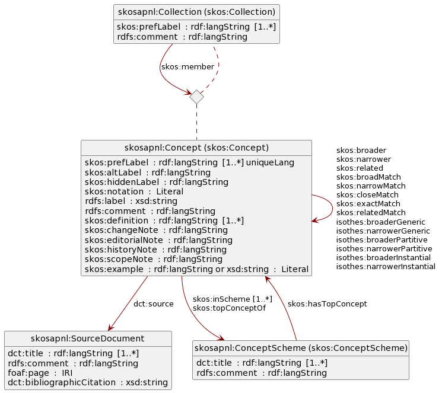

Deze richtlijnen worden opgesteld omdat organisatie in Ontwerp,- Bouw,- en Technieksector (OBT) bij digiGO hebben aangegeven dat er veel discussie is over de ontwikkeling en toepassing van Object Type Libraries (OTL'en). Ook hebben meerdere organisaties aangegeven 'vast te lopen' bij het gebruik van OTL'en.
De vorm en inhoud van OTL’en zijn nog niet in een standaard vastgelegd, ook is er geen landelijke organisatie die de verantwoordelijkheid neemt voor het juist en eenduidig ontwikkelen van OTL’en. Vanuit digiGO vinden we het belangrijk om, samen andere met organisaties, gegevensuitwisseling in de bouwsector te realiseren. Daarom wil digiGO het proces faciliteren om te komen tot eenduidige OTL’en in de bouwsector.
De inhoud en inrichting van dit document wordt in de loop van de tijd gewijzigd en aangepast naargelang de ervaringen en praktijktoepassingen in de OBT. Op het moment dat deze richtlijnen stabiel, gedragen en algemeen geaccepteerd zijn, dan zullen deze richtlijnen aangeboden worden aan het afsprakenstelsel DSGO.
Bij de opzet van deze richtlijnen gaan we uit van 'collectieve intelligentie' ('wisdom of the crowd'). Dit betekent dat expertise uit de sector gewenst is om tot betere resultaten te komen. Met een relatief kleine, losse bijdrage kun je al meedoen en zijn we 'samen slimmer'. Je doet mee door voorstellen in te dienen om de richtlijnen te verbeteren.
1. Inleiding
Interoperabiliteit in de Ontwerp,- Bouw,- en Technieksector (OBT) is noodzakelijk zodat ICT-opdrachtgevers en -opdrachtnemers eenduidig informatie vastleggen en digitaal kunnen uitwisselen. Daarom is het van belang dat Object Type Libraries (OTL) op een eenduidige manier worden opgezet zodat gegevensuitwisseling mogelijk wordt. Voor het ontwikkelen en beheren van OTL'en is het wenselijk om, met alle partijen die een OTL hebben opgezet of gaan ontwikkelen, dezelfde richtlijnen te hanteren.
In de afgelopen jaren is een grote diversiteit aan OTL'en ontstaan. De diversiteit heeft te maken met het gebruik van definities, de structuur waarmee de OTL'en worden opgezet, de techniek die gebruikt wordt en de manier waarop OTL'en worden ingezet. Om meer eenheid te krijgen in de OTL'en worden richtlijnen opgezet die helpen bij het beheer en de ontwikkeling van de OTL'en.
1.1 Waarom richtlijnen
Richtlijnen helpen bij knelpunten waar jij in jouw werk mee te maken krijgt. Ze zijn gebaseerd op normen en praktijkervaringen. Richtlijnen helpen jou om keuzes te maken voor de juiste informatiemodellering. Ze zijn, kortom, bedoeld om de kwaliteit van gegevensuitwisseling in de bouw te verbeteren.
De vraag naar richtlijnen komt vanuit zowel opdrachtgevers als opdrachtnemers, omdat deze organisaties 'vastlopen' op toepassing van OTL'en in de praktijk. De volgende knelpunten zijn aangedragen:
verschil in opvattingen over ‘wat is een OTL’;
verschillende manieren van informatiemodellering waardoor software telkens opnieuw moet worden aangepast;
verschil in structuur en opbouw van OTL'en waardoor gegevensuitwisseling niet gestandaardiseerd kan worden;
een diversiteit van gebruik van bestandsformaten;
een veelheid van definities van dezelfde objecten;
geen inzicht en overzicht van bestaande OTL'en.
1.2 Doel en doelgroep
Dit document is geschreven voor organisaties binnen de gebouwde omgeving die hun eigen semantische informatiemodellen ontwikkelen en beheren, met name als het gaat om publieke informatiemodellen en organisaties die landelijk actief zijn.
Het doel van dit document is om (i) tot een uniform landschap van informatiemodellen te komen die met elkaar zijn uitgelijnd en aansluiten bij (inter)nationale standaarden, (ii) informatiemodellen volgens een afgesproken kwaliteitsstandaard te ontwikkelen en beheren.
1.3 Waarop worden richtlijnen gebaseerd?
De richtlijnen worden gebaseerd op bestaande standaarden, normen en praktijkervaringen. Dit zijn onder andere:
het Beheer- en OntwikkelModel voor Open Standaarden (BOMOS);
de FAIRQ-principes (Findability, Accessibility, Interoperability, Reusability en Quality);
de NEN-2660 serie, "Modelleringsregels voor informatie in de gebouwde omgeving";
Rijkswaterstaat, Provincie Gelderland en digiGO hebben de NEN 2660 afgekocht en deze NEN norm is tot eind 2025 gratis te downloaden op de website van de NEN, NEN Connect - Home. Op deze website dien je wel eerst een account aan te maken.
2. Richtlijnen
Dit hoofdstuk beschrijft de richtlijnen, verdeeld naar onderwerp. Per richtlijn is aangegeven welke van de FAIRQ-eigenschappen het invult. De F en A gaan voornamelijk over toegang tot en beschikbaarheid van het informatiemodel, de I en R over technische operabiliteit en de Q voornamelijk over de kwaliteit van de beheerorganisatie.
2.1 Richtlijnen voor het ontwikkelen van een OTL
Waarom
Het ontwikkelen van een OTL is meer dan een technisch project. Een succesvolle OTL dient het doel waarvoor hij ontwikkeld is, wordt gevonden, wordt veel toegepast en hergebruikt, beweegt mee met de wensen van de gebruikers, wordt ondersteund, en langjarig beheerd. Om dit te bereiken is het van belang om op organisatie- en procesniveau de juiste stappen te zetten.
Richtlijnen
FAIRQ
Kenmerk
Beschrijving
Q
Organisatie
Breng de juiste stakeholders bij elkaar en organiseer samenwerking. Regel mandaat en budget en stel een planning op, en neem hier de beheerfase ook in mee. Zorg dat iedereen die input wil leveren dit ook kan doen, maar zorg tegelijkertijd voor een heldere procedure om tot beslissingen te komen. Voor meer informatie hierover lees het hoofdstuk over het opzetten van een ontwikkel- en beheerorganisatie van BOMOS.
Q
Doel
Formuleer een duidelijk en (liefst) meetbaar doel. Vaak zijn dit doelen als tijds- of kostenbesparing, efficiency, hergebruik van data, automatisering van handelingen, voorkomen van fouten, e.d.
Q
Scope
Kies een realistische scope die binnen de planning en het budget past. Houd de scope beperkt tot bijv. één asset of domein. Maak de scope concreet, praktisch en uitvoerbaar. Formuleer use cases.
R
Inventariseer informatiebronnen
Inventariseer welke informatiebronnen je nodig hebt om de use case af te dekken. Denk aanbijvoorbeeld wetgeving, normen, domeinstandaarden en referentietabellen.
R
Inventariseer bestaande standaarden
Inventariseer welke OTLen en andere standaarden als basis kunnen dienen voor de OTL en bouw hierop voort. Probeer niet het wiel zelf uit te vinden. Zie ook de richtlijnen over eenmalig registreren.
F/A
Publicatie
Publiceer je OTL online, voorzien van een goede beschrijving en documentatie. Voor meer details hierover zie de richtlijnen voor publicatie.
Q
Beheer
Beheer je OTL. Maak een planning voor nieuwe versies en houd de planning van onderliggende standaarden/OTLlen in de gaten. Organiseer ondersteuning voor gebruikers. Voor meer details hierover zie de richtlijnen voor beheer.
2.2 Richtlijnen voor het opzetten van een woordenboek
Waarom
Een woordenboek is een lijst van termen en definities, waar mogelijk hiërarchisch opgezet en aangevuld met relaties tussen begrippen. Een woordenboek is bedoeld voor gebruikers om tot overeenstemming te komen over de betekenis van termen en begrippen. Om effectief te kunnen worden gebruikt moet een woordenboek bovendien goed doorzoekbaar zijn. Het is daarom belangrijk dat (i) een woordenboek altijd op dezelfde manier is opgezet en (ii) een woordenboek zo volledig mogelijk is ingevuld, inclusief bijvoorbeeld synoniemen en (niet zichtbare) zoektermen waar op gezocht kan worden.
2.4 Richtlijnen voor eenmalig registeren, meervoudig gebruik.
Waarom
Dubbele registraties, overtypen van gegevens en dubbele softwareontwikkelingen zijn een bekend probleem. Daarom is het van belang om gezamenlijk te werken met dezelfde gegevens en definities. Daarmee wordt het mogelijk om eenmalig te registreren en meervoudig te gebruiken.
Het opstellen van een goede OTL heeft als randvoorwaarde dat de opgenomen concepten/objecttypes, definities en kenmerken herkenbaar zijn, binnen en buiten de eigen organisatie. Om dit te bewerkstelligen is het belangrijk om zoveel mogelijk gebruik te maken van marktconforme standaarden. Het wiel is vaak voor een groot deel al uitgevonden.
Het volgende is een incomplete lijst van bestaande standaarden en OTLlen:
zie voor de complete lijst het overzicht van Geonovum;
een overzicht van meer standaarden kunt u vinden op de website van digiGO.
Richtlijnen
FAIRQ
Kenmerk
Beschrijving
R
Hergebruik vóór creatie
Nieuwe OTLlen bouwen voort op bestaande OTLlen. Bestaande OTLlen worden zoveel mogelijk hergebruikt. Het introduceren van nieuwe concepten wordt tot een minimum beperkt.
R
Hergebruik door verwijzing
Hergebruik van elementen gebeurt door te verwijzen naar het bronelement via zijn UUID (zie ook de richtlijnen voor uniek identificeren). Bestaande elementen of eigenschappen worden niet herhaald in de nieuwe OTL.
R
Hergebruik faciliteren
Indien organisaties zelf objecttypes, begrippen en definities hebben ontwikkeld, dan is het van belang om deze eenduidig te definiëren en om deze middels een woordenboek beschikbaar te stellen volgens de richtlijnen die hier voorgesteld worden.
R
Benoemen relaties
Relaties met andere OTLlen worden (kort) benoemd in de algemene beschrijving van de OTL.
R
Documenteren relaties
Relaties met andere OTLlen zijn uitgebreid gedocumenteerd in de technische documentatie, inclusief verwijzing naar de bron-OTLlen en de gebruikte versies.
2.5 Richtlijnen voor uniek identificeren
Waarom
Om de betekenis van objecten en gegevens mogelijk te maken is het van belang dat de objecten en gegevensdefinities ‘machine readable’ zijn. Machine readable betekent dat de gegevens door ICT systemen worden begrepen. Hiervoor is het van belang dat de structuur en betekenis van de gegevens eenduidig gecodeerd zijn.
Richtlijnen
FAIRQ
Kenmerk
Beschrijving
R
Unieke codering
Elementen op alle niveaus hebben een unieke codering:
de OTL zelf (dus het woordenboek of de ontologie)
objecttypen, hun eigenschappen en hun relaties;
begrippen, hun eigenschappen en hun relaties;
waardenlijsten de individuele waarden. |
2.6 Richtlijnen voor informatiemodellering
Waarom
De richtlijnen voor informatiemodellering hebben als doel interoperabiliteit, d.w.z., OTLlen sluiten op elkaar aan en data kan tussen deze OTLlen worden gedeeld. Om tot interoperabele OTLlen te komen is het van belang dat ze ontwikkeld worden volgens dezelfde standaard, namelijk de NEN 2660.
De gebruikte talen voor uitwisseling zijn conform de NEN 2660: (relaties tussen) woordenboeken zijn opgezet in SKOS; (relaties tussen) ontologieën in RDFS, RDFS+OWL of RDFS+SHACL.
I
Formaat
De gebruikte formaten voor uitwisseling zijn conform de NEN 2660: RDF-XML, Turtle of JSON-LD
R
Documentatie
De OTL is gedocumenteerd en de documentatie is vindbaar en toegankelijk.
2.7 Richtlijnen voor harmonisatie tussen OTLlen
Waarom
Bij harmonisatie wordt er een mapping gemaakt tussen twee woordenboeken of tussen twee ontologieën via harmonisatierelaties. Harmonisatie is noodzakelijk om tot gegevensuitwisseling tussen deze OTLlen te komen. Wanneer de OTLlen door verschillende organisaties worden beheerd, moet de harmonisatie als een aparte OTL met een aparte beheeropgave worden opgepakt.
Bij harmonisatie tussen OTLlen die binnen dezelfde organisatie worden beheerd, kunnen de harmonisatierelaties impliciet onderdeel zijn van een van beide OTLlen.
R
Externe harmonisatie
Harmonisatie tussen OTLlen van verschillende organisaties moet als een aparte OTL met een aparte beheeropgave worden opgepakt.
R
Benoemen relaties
Relaties met andere OTLlen worden (kort) benoemd in de algemene beschrijving van de OTL.
R
Documenteren relaties
Relaties met andere OTLlen zijn uitgebreid gedocumenteerd in de technische documentatie, inclusief verwijzing naar de bron-OTLlen en de gebruikte versies.
2.8 Richtlijnen voor publicatie
Waarom
Om een OTL te kunnen gebruiken, moet:
de OTL makkelijk te vinden zijn;
de OTL makkelijk te begrijpen zijn; er moet zijn beschreven voor wie en voor wat deze bedoeld is;
de OTL makkelijk beschikbaar zijn; d.w.z. te bekijken en te downloaden;
de beheerder van de OTL makkelijk te bereiken zijn voor vragen.
Dit is gevat in onderstaande richtlijnen.
Richtlijnen
FAIRQ
Kenmerk
Beschrijving
F
Naam
De OTL heeft een eenduidige naam.
F
Beschrijving
Er is een beschrijvende tekst waarin wordt toegelicht waarvoor en voor wie de OTL bedoeld is.
F
Zoektermen
Er zijn termen gedefinieerd (synoniemen, alternatieven, zoektermen) waarop kan worden gezocht.
F
Eigenaar
Er is een eigenaar van de OTL. Naam en contactgegevens van het aanspreekpunt van de eigenaar zijn bekend.
F
Beheerder
Er is een beheerder van de OTL. Naam en contactgegevens van het aanspreekpunt van de beheerder zijn bekend.
F
Vindbaar
De OTL is, inclusief toelichting en documentatie, online vindbaar en beschikbaar.
A
Beschikbaar
De OTL is in zijn geheel te downloaden of kan direct worden benaderd via een REST of SPARQL endpoint.
A
Viewer
De OTL kan online worden bekeken via een viewer.
A
Openheid van gebruik
De OTL is, eventueel na betaling, voor iedereen beschikbaar om te gebruiken.
A
Nederlandse taal
De OTL en alle informatie eromheen zijn in het Nederlands opgesteld.
A
Engelse taal
De OTL en alle informatie eromheen zijn in het Engels opgesteld.
2.9 Richtlijnen voor beheer
Waarom
Gebruikers van een OTL stemmen hun processen en systemen af op de OTL en zijn daarmee op een hele directe manier afhankelijk van hoe de OTL beheerd wordt. Goed beheer is daarom er belangrijk. Versiebeheer moet op orde zijn; er moet bewust worden omgegaan met de impact die wijzigingen kunnen hebben voor gebruikers; (grote) wijzigingen moeten worden aangekondigd; en wijzigingen tussen versies moeten goed zijn gedocumenteerd.
Dit is gevat in onderstaande richtlijnen.
Richtlijnen
FAIRQ
Kenmerk
Beschrijving
Q
Versiebeheer
Er wordt gebruik gemaakt van versienummering met daarbij een datum.
Q
Meest recente versie
De meest recente versie is beschikbaar.
Q
Vorige versie
De vorige versie moet minimaal beschikbaar zijn.
Q
Oudere versies
Oudere versies zijn beschikbaar.
Q
Versieverschillen
Verschillen tussen versies zijn toegelicht.
Q
Releasekalender
Er is een planning beschikbaar voor toekomstige versies, inclusief een indicatie van verwachte wijzigingen per wijziging. Op zijn minst wordt aangegeven of en wanneer er een nieuwe versie verwacht wordt.
Q
Feedback
De beheerder kan benaderd worden, bijvoorbeeld om bugs te melden en features te verzoeken.
digiGO heeft een draaiboek laten opstellen waarin stapsgewijs wordt beschreven hoe tot de ontwikkeling van een OTL te komen en hoe deze vervolgens voor een bepaalde toepassing te implementeren. Het draaiboek is opgezet als onderdeel van het digiGO-versnellingsproject Draaiboek en beproeving OTL-implementatie.
Deze handleiding van CROW beschrijft hoe op basis van IMBOR-LD een eigen ontologie gemaakt kan worden ten behoeve van uitwisseling tussen opdrachtnemer en opdrachtgever. Hoewel de handleiding gericht is op hergebruik van de IMBOR OTL, zijn een aantal van de stappen in deze handleiding zodanig generiek dat ze ook van toepassing zijn bij het opzetten van een algemene OTL.
De originele vraag voor deze handleiding komt voor uit het BIM Pro-programma van de Provincies. Men wil een OTL kunnen samenstellen die aan de opdrachtgever gegeven kan worden, die deze vervolgens 'invult' en teruglevert. Waarop de Provincie de gegevens kan valideren en inlezen in hun systemen. Het doel (en daarmee de scope) van deze handleiding om een Provincie in staat te stellen moet zijn om een OTL op te zetten in een spreadsheet (conventioneel) of LinkedData (duurzaam) formaat.
Dit document is opgezet ter verduidelijking van de totstandkoming van de Object Type Library (OTL) voor de Provincie Gelderland. Hierin wordt beschreven welke ontwerpuitgangspunten, keuzes & raakvlakken aan de basis staan van de OTL.
3.4 Samenvatting van de Standaard voor het beschrijven van begrippen (SBB)
Voor het opstellen van een woordenboek volgen we de SBB. In dit hoofdstuk geven we een korte samenvatting van de SBB.
Merk op dat de SBB voldoet aan de NEN 2660. Een woordenboek opgezet volgens de SBB is dus conform hoe woordenboeken volgens de NEN 2660 moeten worden opgezet.
3.4.1 Inleiding
De SBB onderscheidt verschillende vormen van woordenboeken:
een begrippenlijst is de meest simpele vorm van een woordenboek. Het is een lijst van termen voorzien van een definitie en/of toelichting;
een taxonomie is een begrippenlijst met hiërarchische relaties. Dit geeft structuur aan het woordenboek en maakt het makkelijker begrippen te vinden;
een thesaurus is een taxonomie met relaties tussen begrippen. Hiermee wordt duidelijk hoe begrippen met elkaar samenhangen. Daarnaast vergroot het de vindbaarheid van begrippen omdat op gerelateerde begrippen kan worden gezocht.
Er zijn geen verplichtingen aan de vorm van een woordenboek. Over het algemeen geldt dat een "rijkere" vorm (dus met meer informatie) meer begrip geeft aan lezers en beter doorzoekbaar is. Het geeft echter mogelijk ook een grotere beheerlast.
Een woordenboek wordt in de SBB een begrippenkader genoemd. Een begrippenkader is een verzameling van begrippen die in een bepaalde context relevant zijn. Een begrip is een eenheid van denken -- een idee, betekenis of categorisering. Begrippen hebben eigenschappen en onderlinge relaties, o.a. naar brondocumenten. Een brondocument is een resource op het web of een fysiek document dat relevant is voor een begrip. Tot slot zijn er collecties. Een collectie is een verzameling van begrippen die voor een bepaalde situatie betekenisvol bij elkaar passen.
Het gebruik van begrippen en begrippenkaders is verplicht en redelijk evident. Elk begrip behoort tot minimaal één begrippenkader. Begrippen kunnen worden gebruikt in meerdere begrippenkaders. Als een begrip in een document wordt beschreven (wetgeving, standaarden, etc.) dan is het goed daar naar te verwijzen via een brondocument (maar dit is niet verplicht). Merk op dat een brondocument hier een beschrijving is van (incl. verwijzing naar) het eigenlijke brondocument. Een collectie bevat nul of meer begrippen. Het gebruik van collecties is optioneel. Collecties zijn geen onderdeel van een begrippenlijst, taxonomie of thesaurus. We besteden hier weinig aandacht aan het gebruik van collecties.
3.4.2 Specificatie
De concepten begrip, begrippenkader, brondocument en collectie hebben elk eigenschappen en relaties tot elkaar. Een begrippenkader heeft bijvoorbeeld een naam en uitleg, en optioneel één of meer topbegrippen. Deze eigenschappen en relaties zijn uitgebreid beschreven in de SBB. Het model is daarnaast uitgewerkt in RDF, zie onderstaande figuur.

Figuur 1 Toepassingsprofiel van het SBB in SKOS.
Hierbij wordt gebruik gemaakt van de volgende taalbinding:
SBB-entiteit
Taalbinding in RDF
begrippenkader
skos:ConceptScheme
begrip
skos:Concept
brondocument
foaf:Document**
collectie
skos:Collection
** Dit ontbreekt in het figuur.
Het figuur laat ook zien welke eigenschappen of relaties verplicht zijn via de cardinaliteit [1..*]. Dit lichten we nog eens toe in de volgende subsecties.
3.4.2.1 Begrippenkader
Een begrippenkader (skos:ConceptScheme) moet een naam (dct:title) hebben en zou een uitleg (rdfs:comment) moeten hebben.
Het aangeven van topbegrippen via de relatie "heeft topbegrip" (skos:HasTopConcept) is niet verplicht omdat deze automatisch kunnen worden afgeleid.
3.4.2.2 Begrip
Een begrip (skos:Concept) moet minimaal een Nederlandse (@nl) voorkeursterm (skos:prefLabel) en een definitie (skos:definition) hebben. Een begrip moet tot één of meer begrippenkaders behoren via de relatie "in kader" (skos:inScheme). Het wordt afgeraden om een naam (rdfs:label) te specificeren omdat deze te algemeen is.
Voor hiërarchische relaties geldt dat deze minimaal vanuit het onderliggende begrip naar het bovenliggende begrip moeten worden aangegeven via de relatie "heeft bovenliggend begrip" (skos:broader).
Het aangeven van topbegrippen via de relatie "is topbegrip van" (skos:topConceptOf) is niet verplicht omdat deze automatisch kunnen worden afgeleid.
In een thesaurus moeten begrippen aan elkaar worden gerelateerd via "is gerelateerd aan" (skos:related), "is specialisatie van" (isothes:broaderGeneric), "is generalisatie van" (isothes:narrowerGeneric), "is onderdeel van" (isothes:broaderPartitive), "omvat" (isothes:narrowerPartitive), "is exemplaar van" (isothes:broaderInstantial) en "is categorie van" (isothes:narrowerInstantial). Relatie "is gerelateerd aan" is een generieke vorm van deze relaties, de overige zijn specialisaties van deze relatie. De specialisaties kunnen als "is gerelateerd aan" worden geïnterpreteerd; omgekeerd is dit niet het geval. Het is aan de ontwikkelaar van een woordenboek om de keuze te maken welke relaties hij wil gebruiken: generieke of gespecialiseerde. Het zou goed zijn als de ontwikkelaar deze keuze consequent doorvoert, en niet generieke en gespecialiseerde door elkaar heen gebruikt.
3.4.2.3 Brondocument
Een brondocument (foaf:Document) moet minimaal een naam (dct:title) hebben. Het gebruik van bronnen is niet verplicht. Het is goed om bronnen te gebruiken en deze van een bronverwijzing (dct:bibliographicCitation) of url (foaf:page) te voorzien als begrippen gebaseerd zijn op externe bronnen.
3.4.2.4 Collectie
Een collectie (skos:Collection) moet een voorkeursterm (skos:prefLabel) hebben. Het gebruik van collecties is volledig optioneel. Een collectie bevat nul of meer begrippen via de relatie "bevat" (skos:member). Merk op dat een collectie bepaalt of een begrip lid is van de collectie of niet. Er is geen omgekeerde relatie, d.w.z. een begrip kan zichzelf geen lid maken van een collectie.
3.4.3 Voorbeelden
Noot: Naamgeving in de voorbeelden
Ten behoeve van de leesbaarheid is er in de hier getoonde voorbeelden gebruik gemaakt van betekenisvolle namen. Dit wil niet zeggen dat dit ook de aangeraden naamgevingsconventie is. Zie voor algemene strategieën voor naamgeving de SBB of de NEN 2660.
3.4.3.1 Begrippenlijst
Het volgende voorbeeld toont een begrippenlijst met daarin een begrippenkader met twee begrippen waarbij een begrip een brondocument heeft.
@prefixrdfs: <http://www.w3.org/2000/01/rdf-schema#> .
@prefix skos: <http://www.w3.org/2004/02/skos/core#> .
@prefix dct: <http://purl.org/dc/terms/> .
@prefix digigo: <http://digigo.nu/def#> .
digigo:Begrippenkader1 a skos:ConceptScheme ;
dct:title "Begrippenkader1"@nl ;
rdfs:comment "Een voorbeeld van een begrippenlijst."@nl .
digigo:Begrip1 a skos:Concept ;
skos:prefLabel "Begrip 1"@nl ;
skos:definition "Dit is de definitie van begrip 1."@nl ;
skos:inScheme digigo:Begrippenkader1 .
digigo:Begrip2 a skos:Concept ;
skos:prefLabel "Begrip 2"@nl ;
skos:definition "Dit is de definitie van begrip 2."@nl ;
skos:inScheme digigo:Begrippenkader1 ;
dct:source digigo:Bron1 .
digigo:Bron1 a foaf:Document ;
dct:title "Bron1"@nl
3.4.3.2 Taxonomie
In dit voorbeeld wordt hiërarchie gedefinieerd met behulp van skos:broader. De topbegrippen zijn aangegeven met skos:topConceptOf, hoewel dit niet verplicht is.
@prefixrdfs: <http://www.w3.org/2000/01/rdf-schema#> .
@prefix skos: <http://www.w3.org/2004/02/skos/core#> .
@prefix dct: <http://purl.org/dc/terms/> .
@prefix digigo: <http://digigo.nu/def#> .
digigo:Begrippenkader10 a skos:ConceptScheme ;
dct:title "Begrippenkader10"@nl ;
rdfs:comment "Een voorbeeld van een taxonomie."@nl
digigo:Begrip10 a skos:Concept ;
skos:prefLabel "Begrip 10"@nl ;
skos:definition "Dit is de definitie van begrip 10."@nl ;
skos:inScheme digigo:Begrippenkader10
skos:topConceptOf digigo:Begrippenkader10
digigo:Begrip11 a skos:Concept ;
skos:prefLabel "Begrip 11"@nl ;
skos:definition "Dit is de definitie van begrip 11."@nl ;
skos:inScheme digigo:Begrippenkader10
skos:topConceptOf digigo:Begrippenkader10
digigo:Begrip12 a skos:Concept ;
skos:prefLabel "Begrip 12"@nl ;
skos:definition "Dit is de definitie van begrip 12."@nl ;
skos:inScheme digigo:Begrippenkader10
skos:broader digigo:Begrip10
digigo:Begrip13 a skos:Concept ;
skos:prefLabel "Begrip 13"@nl ;
skos:definition "Dit is de definitie van begrip 13."@nl ;
skos:inScheme digigo:Begrippenkader10
skos:broader digigo:Begrip12